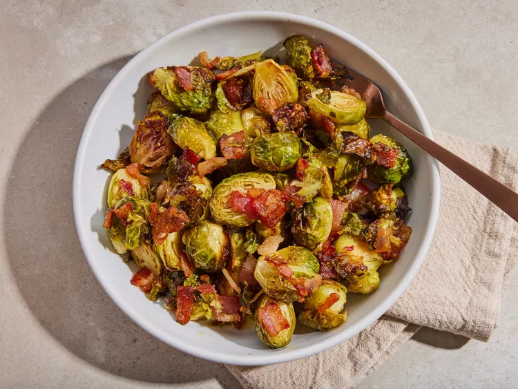

Maple Roasted Brussels Sprouts with Bacon

Description
These roasted Brussels sprouts with bacon are sweet, savory, and completely delicious. You'll want to make these bacon Brussels sprouts all season long.
Ingredients
- 1 pound whole Brussels sprouts
- 4 slices bacon, cut into 1/2-inch pieces
- ½ teaspoon salt
- ¼ teaspoon freshly ground black pepper
- ¼ cup extra-virgin olive oil
- 3 tablespoons pure maple syrup
Steps
- Gather all ingredients. Preheat the oven to 400 degrees F (200 degrees C). Line a rimmed baking sheet with aluminum foil.
- Trim ends off Brussels sprouts and cut any large ones in half. Transfer to a large bowl.
- Add bacon, salt, and pepper to the Brussels spouts. Drizzle olive oil and maple syrup over top and toss until sprouts are well coated.
- Transfer to the prepared baking sheet and spread in a single layer.
- Roast in the preheated oven until bacon is crispy and Brussels sprouts are caramelized, 20 to 30 minutes, stirring halfway through.
- Serve warm and enjoy!